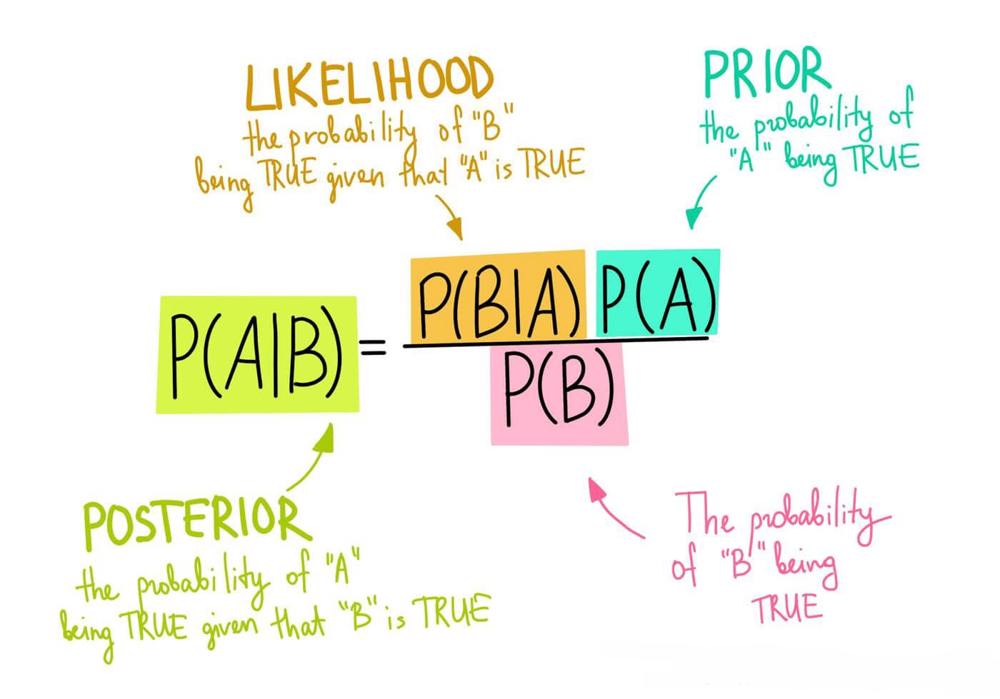
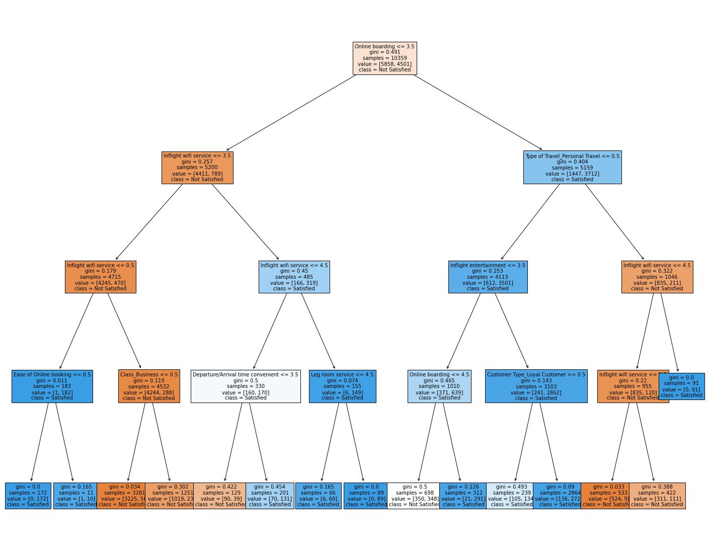

Finding out whether someone did or did not enjoy their flight with machine learning!
Our team created a website to show how we can predict a passenger's satisfaction on an airplane with visualizations and models.
For our project we used:
The percentage of people who are satisfied or unsatisfied based on the on-board service.
The percentage of people who were satisfied or neutral/dissatisfied in relation to their leg room rating. This can be the result of the quality of flight, which explains why the higher the rating, the more likely the customer was satisfied.
The percentage of people who are satisfied or unsatisfied based on the convenience on departure and arrival times. This has many variables, but overall, it seems like there was only a slight difference between the satisfaction ratings, meaning that it's not as important to passengers.
The percentage of people who were satisfied or dissatisfied in relation to their rating on the inflight wi-fi service. Overall, it seems that wifi is very important to customers, as those who were satisfied typically had a higher rating on the wifi, mostly four or five. In fact, less than 1% who rated a 5 for wifi were unsatisfied.
The percentage of people who are satisfied or unsatisfied based on the on-board service. Those who rated high on the on-board service were typically satisfied with their flight, meaning that on-board service plays a significant factor in the satisfaction ratings.
What class a person was in, and whether their flight is short, medium, or long. Short flights mostly carry Eco passengers, and most Eco Plus passengers take short flights. Medium distance flights are about half business passengers. Long distance flights are almost only business passengers, with less then one percent being either Eco or Eco Plus.
The amount each of our variables correlate. The closer to 0 the less the correlation, closer to 1 the correlation increases positively, closer to -1 the correlation increases negatively. Most of our variables don't really correlate. The only column/row we care about is the satisfaction column/row. Most of them don't really correlate but Online Boarding and Business Class have a .5 correlation.
Takes various variables and plots each one with each one. From the selected variables the only ones that correlate are Departure Delay and Arrival Delay, but this doesn't give us any new information.
Whether a customer is loyal and disloyal and whether they were satisfied, or neutral/dissatisfied. There is a 3 times greater chance for disloyal customers to be neutral/dissatisfied
In order to achieve our goal, we used a wide variety of machine learning models. They all worked differently and used various methods to answer our question. This gave them various answers, and some were more accurate than others. This helped us determine which model would most accurately determine which factors matter the most, and which model is the most consistent. Some of the models we used include: Random Forest, Support Vector Classifier, Stochastic Gradient Descent, and more, although we only presented a select few.
A random forest model is a model that makes a given number of randomized decision trees and uses averaging functions to combine its results from the decision trees and makes predictions on the data. This allows for a more accurate and realistic prediction.
Randomizing decision trees allows the model to individually look for correlations between sections of the dataset, making predictions more intuitive, compared to looking at the entire dataset through one decision tree, as it is harder to find patterns where there
are so many variables to consider. It then takes the accuracy of the models it makes and displays them on the heat-map so that we can see how accurate or precise the model is.
Through some light hyper parameter tuning, we found that at around twenty decision trees, there was no more improvement in the performance of the model and subsequent additions to the amount of decision trees would just increase the processing time.
There were also no differences in accuracy/precision when we tried different criterion such as "entropy" and "log_loss", so we decided that "gini", the default criterion, was good enough for the model.
Using GridSearchCV, we saw a slight increase in performance for higher amounts of decision trees, like 30, and it looked like "entropy" had slightly better results than "gini", so we switched to those hyper parameters.
The categorical Naive Bayes model works using the Bayes Theorem, which assumes that individual features are dependent on each other, which works well with our dataset, as we can see through our correlation matrix that none of our features are very correlated. Applying the Bayes Theorem assigns a probability to each feature in the dataset, then uses those probabilities to predict an outcome. The categorical Native Bayes model works best for categorical data, which works well with our dataset, as we have a lot of categorical data in the form of 1-5 ratings for the airline's performance. An alpha value of 3 seemed to slightly improve the model, but further increases to alpha didn't make a significant difference.

A Decision Tree Classifier uses the given data and information to help make a decision tree. It is a group of questions that depending on how you answer one question it takes you down a certain path. The model checks various variables and checks whether they match the requirements of the question. If it does, you go down the left path. If it doesn't, you go down the right path. After you reach the bottom, it will put in either the satisfied group, or the neutral or dissatisfied group. This makes it relatively simple and easy to understand, while also giving consistent results. As an addition, it has a lot of parameters which, while it makes it difficult to do hyper parameter tuning, allows it to be quite accurate in most situations if you tune it well. The parameters we changed were max depth at 4, min samples leaf at 5, and min samples split at 2. We used grid search to find out the best parameters.
Meet the team who built these visualizations and models!
description
description
description
description
description
Built and did the Hyper Parameter Tuning for the Decision Tree
Leader of the team